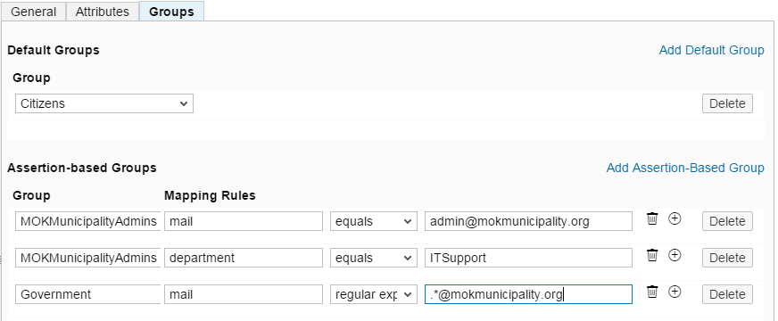

ID Federation with the Corporate Identity Provider
You can delegate user authentication for your applications to your corporate identity provider. This is called identity federation. SAP Cloud Platform supports Security Assertion Markup Language (SAML) 2.0 for identity federation.
-
You have a key pair and certificate for signing the information you exchange with the IdP on behalf of SAP Cloud Platform. This ensures the privacy and integrity of the data exchanged. You can use your pre-generated ones or use the generation option in the cockpit.
-
You have provided the IdP with the above certificate. This allows the IdP administrator to configure its trust settings.
-
You have the IdP signing certificate to enable you to configure the cloud trust settings.
-
You have negotiated with the IdP administrator which information the SAML 2.0 assertion will contain for each user. For example, this could be a first name, last name, company, position, or an e-mail.
-
You know the authorizations and attributes the users logged by this IdP need to have on SAP Cloud Platform.
Configure SAP Cloud Platform as a Local Service Provider
Context
In the SAML 2.0 communication, each SAP Cloud Platform account acts as a
service provider. For more information, see Security Assertion Markup Language (SAML) 2.0 protocol specification.
protocol specification.
You need to configure how the local service provider communicates with the identity provider. This includes, for example, setting a signing key and certificate to verify the service provider’s identity and encrypt data. You can use the configuration settings described in the table that follows.
|
Local Service Provider Configuration |
Description |
When to Use |
|---|---|---|
|
Default |
The local provider's own trust settings will inherit the SAP Cloud Platform default configuration (which is trust to SAP ID service). |
For testing and exploring the scenario |
|
None |
The local provider will have no trust settings, and it will not participate in any identity federation scenario. |
For disabling identity federation for your account |
|
Custom |
The local provider settings will have a specific configuration, different from the default configuration for SAP Cloud Platform. |
For identity federation with a corporate identity provider or Identity Authentication tenant |
In addition, you can configure the following local service provider settings:
|
Local Service Provider Configuration (Additional) |
Description |
|---|---|
|
Principal Propagation |
If you set it to Enabled, you enable applications to propagate principal information to each other. Choose this value if you want to enable application-to-application single sign-on. Otherwise, set this option to Disabled. |
|
Force authentication |
. If you set it to Enabled, you enable force authentication for your application (despite SSO, users will have to re-authenticate each time they access it). Otherwise, set this option to Disabled. |
Procedure
-
Choose the
 Security
Security  Trust
Trust  section.
section.
(Optional) Guidelines for Using External Key and Certificate
Use the following guidelines if you want to use for the local service provider a signing key and certificate generated using an external tool (such as OpenSSL):
- Use RSA as a signing algorithm for the private key
- Convert the private key file into the unencrypted PKCS#8 format
- Strip off the tags —–BEGIN PRIVATE KEY—– and —–END PRIVATE KEY—– from the private key
- Strip off the tags —–BEGIN CERTIFICATE—– and —–END CERTIFICATE—– from the certificate.
Example
You want to use OpenSSL as a tool for key pair generation.
First, create the key pair using the following command:
openssl req -x509 -nodes -days 365 -sha256 -subj “/CN=https:\/\/hanatrial.ondemand.com\/<your account name>” -newkey rsa:2048 -keyout spkey.pem -out spcert.pem
Replace <your account name> in the command with your SAP Cloud Platform account name. As a result, two files are generated: spkey.pem and spcert.pem.
Convert the private key file spkey.pem into the unencrypted PKCS#8 format using the following command:
openssl pkcs8 -nocrypt -topk8 -inform PEM -outform PEM -in spkey.pem -out spkey.pk8
Now open the file spkey.pk8 in a text editor and copy all contents except for the tags —–BEGIN PRIVATE KEY—–, —–END PRIVATE KEY—– into the Signing Key text field in the cockpit. Then open the file spcert.pem in a text editor and copy all contents except for the tags —–BEGIN CERTIFICATE—– and —–END CERTIFICATE—– into the Signing Certificate text field in the cockpit.
After clicking Save you should get a message that you can proceed with the configuring of your trusted identity provider settings.
Configure Trust to the SAML Identity Provider
Context
To benefit from fully-featured identity federation with SAML identity providers, you need to have chosen the Custom configuration type in the Local Service Provider section.
For Default configuration type, you have non-editable trust to SAP ID Service as default identity provider. You can add other identity providers but they can be used for IdP-initiated single sign-on (SSO) only.
For None, you don't have any trust settings.
Procedure
-
Enter the Security Trust Application Identity Provider section.
-
In the Groups tab, configure the groups associated with
this IdP's users.
Groups that you define on the cloud are later mapped to Java EE application roles. As specified in Java EE, in the web.xml, you define the roles authorized to access a protected resource in your application. You therefore define the groups that exist there and the roles to which each group is mapped via the Groups tab in the cockpit. For each different IdP, you then define a set of rules specifying to which groups a user logged by this IdP belongs.
For more information about configuring groups, see Managing Groups and Roles.
Note You must have defined groups in advance before you define default or assertion-based groups for this IdP.Default groups are the groups all users logged by this IdP will have. For example, all users logged by the company IdP can belong to the group "Internal".
To add a default group, proceed as follows:
- On the Groups tab page, choose Add Default Group.
-
From the dropdown list that appears, choose the required group.
Assertion-based groups are groups determined by values of attributes in the SAML 2.0 assertion. For example, if the assertion contains the attribute "contract=temporary", you may want all such users to be added to the group "TEMPORARY".
To add an assertion-based group, proceed as follows:
- On the GROUPS tab page, choose Add Assertion-Based Group. A new row appears and a new mapping rule is now being created.
-
Enter the name of the group to which users will be mapped. Then define the rule for this mapping.
-
In the first field of the Mapping Rules section, enter the SAML 2.0 assertion attribute name to be used as the mapping source. In other words, the value of this attribute will be compared with the value you specify (in the last field of Mapping Rules).
-
Choose the comparison operator.
- Choose Equals if you want the value of the SAML 2.0 assertion attribute to match exactly the string you specify. Note that if you want to use more sophisticated relations, such as "starts with" or "contains", you need to use the Regular expression option.
- Choose Regular expression if you want to
specify more sophisticated matching rules. You can use all
regular expression rules described in the Java RegEx API.
Example 1: You want to add authenticated SAP employees to group Employees. And SAP employees are users with e-mail address ending with sap.com. Hence, you choose the mapping rule to be email, matched using the following regular expression:
.*@sap.com$
Example 2: You want all users with name starting with admin to be added to group Administrators. Hence, you choose the mapping rule to be userid, matched using the following regular expression:
^(admin).*
-
In the last field of Mapping Rules, enter the value with which you compare the specified SAML 2.0 assertion attribute.
-
You can specify more than one mapping rule for a specific group. Use the plus button to add as many rules as required. In this case, mapping is based on a logical AND operation for all rules, that is, if one of your rules applies, the user is added to the group.

In the image above, all users logged by this IdP are added to the group Citizens. All users from the ITSupport department and the user with e-mail admin@mokmunicipality.org are added to group MOKMunicipalityAdmins for this account. The rest of the employees at MOKMunicipality (having an e-mail address in the mokmunicipality.org domain) are assigned to group Government.
Using an IdP Different from the Default
Context
You can define more than one identity provider for your account. There is always the default IdP. Initially, SAP ID service is the default IdP but you can change that after you add another IdP.
If you want to use an IdP different from the default one, you can do so by requesting your application with a special request parameter saml2idp with value the desired IdP name. For example:
https://<app name>.hana.ondemand.com/index.jsp?saml2idp=<idp name>